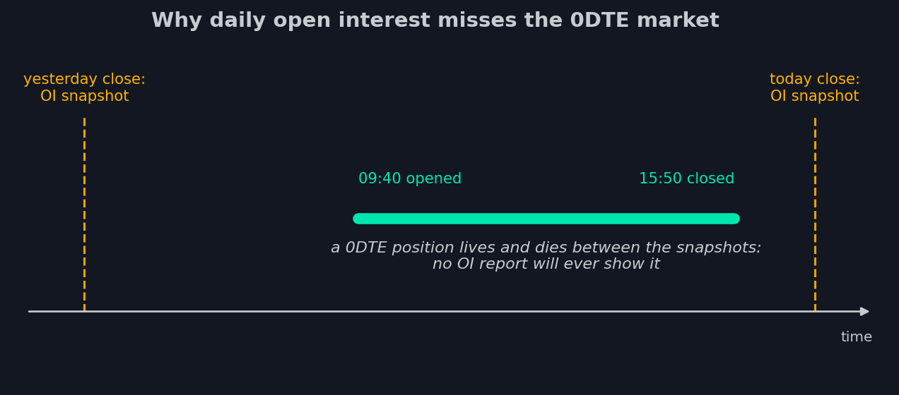

8. La fotografía de un mercado que ya no existe
Volvamos a la tabla matinal con la que abría la lección 5 — el informe diario de
open interest, el cimiento de toda la analítica clásica. Ya sabemos cómo se hacen
con ella los muros, los imanes y los perfiles GEX. Ahora, tras conocer el 0DTE,
hagámosle a la tabla una pregunta simple: ¿qué es lo que realmente ve?
La mitad invisible
El open interest se registra una vez al día, tras el cierre. Sigamos una posición
0DTE típica a través de ese calendario.

La foto de ayer por la tarde no la captó — aún no existía. La de hoy tampoco la
captará — se cerró a las 15:50, y lo que sobrevivió hasta el final del día venció
y se fue a cero. El contrato vivió seis horas, su cobertura persiguió a los
futuros todo el día — y en la fuente principal de datos no dejó ni un solo
registro. No un registro tardío — ninguno en absoluto.
Para ser justos: el vencimiento de hoy sí tiene pasado. La serie que vence hoy se
listó con antelación y se negoció ayer y antes — y las posiciones abiertas en ella
por adelantado, el OI matinal las muestra honestamente. Pero esa parte visible es
una capa fina: el grueso del volumen 0DTE se abre el mismo día del vencimiento,
vive horas y se desvanece, como la posición del diagrama. Y por la tarde el
vencimiento pone a cero toda la serie — así que incluso su «pasado» desaparecerá
del informe de mañana.
Ahora multiplica por la escala de la lección anterior: cerca de la mitad del
volumen del mayor mercado de opciones del mundo fluye por series del mismo día — y
la parte del león de esas operaciones nace después de la foto matinal. El OI
diario no llega tarde al informarlas — es por principio incapaz de ver lo que se
abrió y cerró entre sus fotogramas. El instrumento no se rompió; se rompió el
mundo para el que fue diseñado.
¿Y qué pasa con la otra mitad?
Las posiciones de más de un día sí llegan al OI — pero también aquí el calendario
estropea el cuadro. La foto se tomó ayer por la tarde. Un muro calculado con ella
es un muro del mercado de ayer; para mediodía, los flujos de hoy pueden haber
levantado un nudo en otro strike o desmantelado el de ayer. Los niveles que se
mueven dentro del día, una fotografía diaria los muestra, por definición, con un
día de retraso.
Peor aún: el punto débil de la analítica GEX de la lección 5 — el supuesto sobre
quién está en qué lado de la operación — se volvió todavía más vulnerable en el
mundo nuevo. Cuando las posiciones se acumulaban durante semanas, un error en la
conjetura sobre una operación se ahogaba en la masa. Cuando el libro se
reconstruye en horas, los lados hay que adivinarlos de nuevo cada día — y los
datos para ello siguen tan ausentes del OI como siempre.
Pliego de condiciones para los datos nuevos
Escribamos qué haría falta para ver de verdad el mercado 0DTE. La lista es corta,
y cada punto golpea una ceguera concreta del OI diario.
Frecuencia: minutos, no días. El libro del MM vive dentro del día — así que
los datos de posiciones también tienen que actualizarse dentro del día.
Lados, no conjeturas. Para calcular el libro del MM sin supuestos, hay que
saber si cada operación fue compra o venta — exactamente aquello sobre lo que el
OI calla desde la lección 2.
Participantes, no volumen sin rostro. El retail comprando puts de lotería y
las instituciones vendiendo prima crean libros de MM opuestos. Distinguirlos
significa conocer por primera vez el signo del libro en lugar de suponerlo.
Durante mucho tiempo esa lista parecía fantasía: las bolsas no publicaban nada
parecido. Y entonces la bolsa donde se negocia todo el complejo SPX empezó a
vender exactamente eso — datos de posicionamiento minuto a minuto con desglose por
tipo de participante y lado de la operación. Ese feed — y lo que construimos
encima — es de lo que trata todo el resto del curso.
- Una posición abierta y cerrada el día del vencimiento no llega a ningún informe de OI - no tarde: nunca.
- Solo es visible la capa nocturna de una serie - fina al lado del volumen del propio día de vencimiento.
- El pliego de condiciones de los datos nuevos: frecuencia de minutos, lados de la operación conocidos, desglose por tipo de participante.